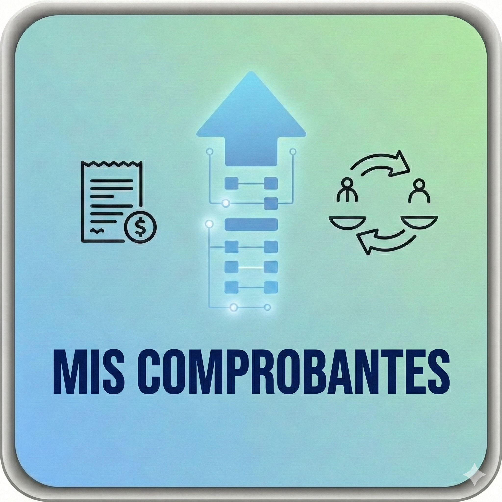

1. Upload your AFIP CSV file (Purchases or Sales).
2. Click on "Analyze File" to verify the data and detect potential issues.
3. Review the analysis report.
4. Click on "Process File" to create the invoices and partners.